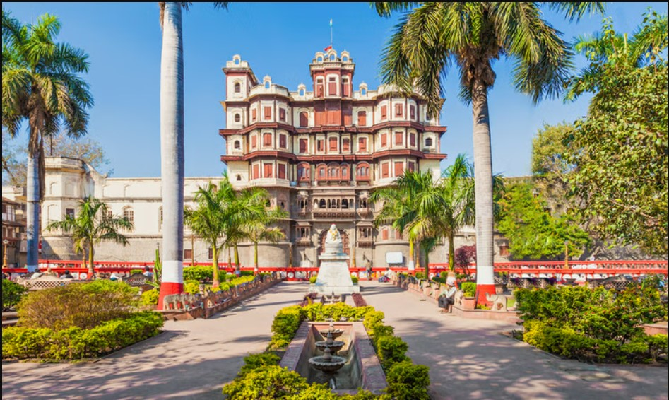

Rajwada Palace
Rajwada Palace is one of the most iconic heritage sites in Indore. It was built by the Holkars, the Maratha rulers of Indore, in the 18th century. The palace is a perfect blend of Maratha and Mughal architecture.
Visitors can explore the palace's majestic structure and learn about the rich history of the Holkar dynasty.
